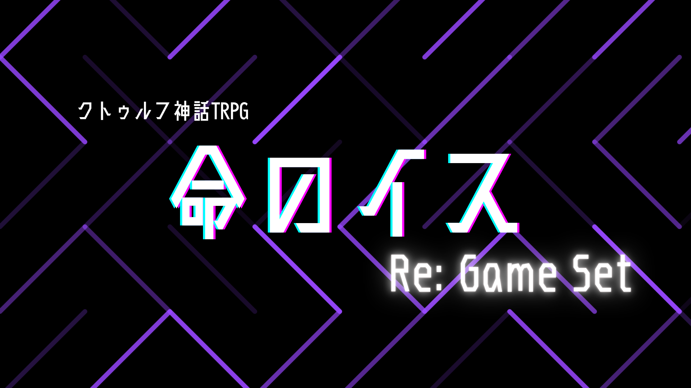

作品紹介
とある楽曲をもとに作られた短編シナリオ
突如としてデスゲームに巻き込まれた探索者。
殺し合いの最中、見つけた希望に手を伸ばす。
サクっと遊べるのに、クリア後は達成感を味わえる嗜好の一作。
※本作はクトゥルフ神話TRPG第6版向けの作品です。シナリオのあらすじやプレイ情報など、詳細は配布ページをご確認ください。
作品情報
- システム：クトゥルフ神話TRPG 第6版
- 配布・頒布先：BOOTH
- プレイ人数:1人
- 推定プレイ時間:3〜4時間
- 背景:現代日本
- 推奨技能:戦闘技能、3大探索技能
- 新規探索者推奨
- 神話生物への独自の解釈が多数含まれます。
- キャラクターシートに異変が起きる可能性があります。
配布ページ
作品の詳細、価格、ダウンロード内容、利用条件などは、以下のBOOTHページでご確認ください。
BOOTHで作品を見る ↗#命のイス